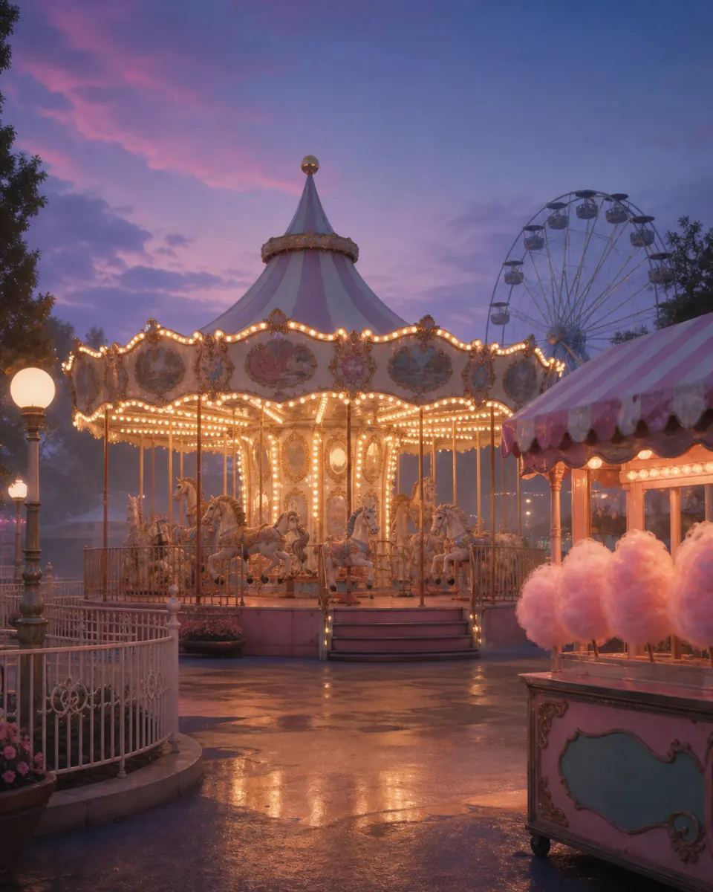

Карусель «День Солнца»
Ежедневное театрализованное представление с нашими любимыми маскотами. Просто наслаждайтесь шоу, подпевайте джинглу и, пожалуйста, не пытайтесь заглядывать под маски актеров — пусть магия остается магией!
Радость и смех — здесь места хватит навечно для всех!
В Парке «Солнышко» этот вечер никогда не заканчивается.
Вечные сумерки
Помните то чувство, когда родители впервые привели вас в парк аттракционов? Запах сладкой ваты, огни каруселей в сумерках и абсолютное счастье. В Парке «Солнышко» этот вечер никогда не заканчивается.
Мы восстановили классические аттракционы, чтобы вы и ваши дети могли снова и снова переживать лучшие моменты жизни. Приходите всей семьей и оставайтесь там, где радость не просит уходить домой.

Ежедневное театрализованное представление с нашими любимыми маскотами. Просто наслаждайтесь шоу, подпевайте джинглу и, пожалуйста, не пытайтесь заглядывать под маски актеров — пусть магия остается магией!
Беспроигрышная лотерея для самых метких. Забирайте домой огромные, полноразмерные мягкие игрушки. Они такие реалистичные и... еще теплые.
Наша знаменитая Комната Смеха. Улыбайтесь своему отражению, и вы обязательно найдете выход.
На территории парка дежурят наши вежливые сотрудники в белых халатах. Если у вас закружилась голова от веселья, они с радостью предложат вам уединиться.
Гостевая оболочка не предназначена для просмотра медицинского протокола объекта. Перейдите в служебный файл.
Открыть протокол сортировки